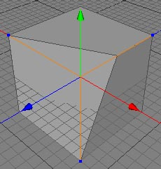

Point Slide Tool
The point slide tool can be used to move a point along its neighbouring edges.

Modes
The point slide tool can only be applied to raw polygon objects. It's behavior in point, edge and polygon modes are the same.


To perform a point slide, just click on a point of a polygon mesh. All edges which share this point will now become highlighted. You can now drag and drop your selected point along the highlighted edges. The current position of the point on the edge will be displayed as an offset ratio in the tool view. Release the mouse button to finish the operation.
Keys
- Shift : Press the shift key while you drag the mouse if you want to slide the point over the ends of the edges.
Point slide while pressing the shift key
Properties
- none